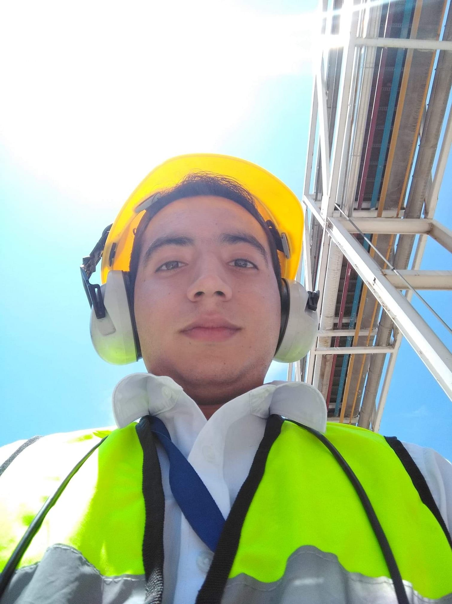

CV de Jaime Romero
Hardware hacker
Mas de 6 años de experiencia realizando proyectos de Teconologia
utilizando Arduino , asi cmo otras tecnoligias.
Educacion
- Ingeniero en Control y Automatizacion
- 2014-20128. Instituto Politecnico Nacional
- Arduino Expert
- 2020. Arduino CC

Experiencia Profesional
- Desarrollo de Hardware IoT
- 2018-2020. Diseño, Creacion e Integracion de Hardware IoT para monitoreo de Baterias asi como de Analisis de
Vibraciones y Temperatura
- Solar Hardware Developer
- 2018.Creacion de Controladores Solares para la industria de publicidad enfocados a anuncios inteligentes
- Soprte Tecnico de TI
- 2016-2017.Soporte a equipos de computo,impresion,cctv, servidores y páginas web
Proyectos
- Battery Monitor
- Monitor del estado de Baterias para equipos electricos para prevenir daños en la bateria,calcular
útil,monitoreo remoto con IoT y generar reportes de mantenimiento
- PWM Solar Controller
- Cargador de Baterias Solar Utilizando la técnica de modulació por Ancho de pulso , diseño y programacion
de todos los circuitos electronicos
- Monitor de Ritmo Cardiaco
- Monitor de ritmo Cardiaco para evitar que los conductores se duerman mientras manejen o no puedan manejar si
estan bajo efectos de sustancias tales como drogas o bebidas alcoholicas
Otros
- Programacion de Python con Raspberry Pi
- Proyectos con ciencia de Datos
- Hardware Hacker